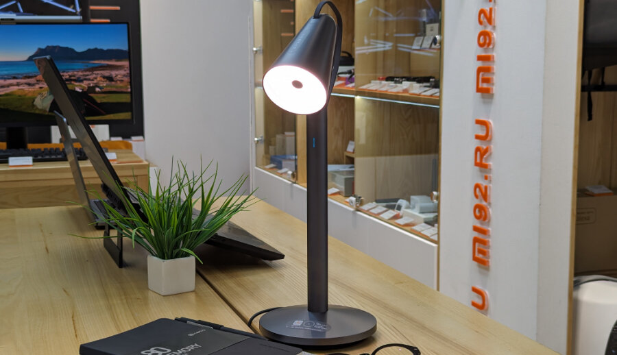

Умная лампа Xiaomi "PiPi"
Устройство было разработано совместно с компанией Beijing AIQI Technology, которая специализируется на создании инновационных продуктов с использованием искусственного интеллекта. Лампа получила название Pipi из-за своей формы, напоминающей голову маленького робота.
Mijia Pipi Lamp — это совершенно уникальный продукт, который сочетает в себе функции осветительного прибора и интерактивного помощника. Этот настольный светильник не просто обеспечивает комфортное освещение для работы и отдыха, но и реагирует на жесты пользователя, выражает свое настроение и эмоции, следит за действиями пользователя и автоматически направляет свет в нужную сторону.